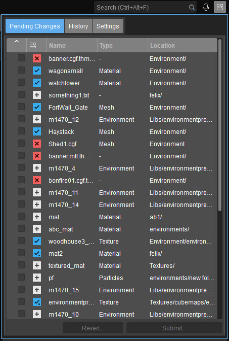
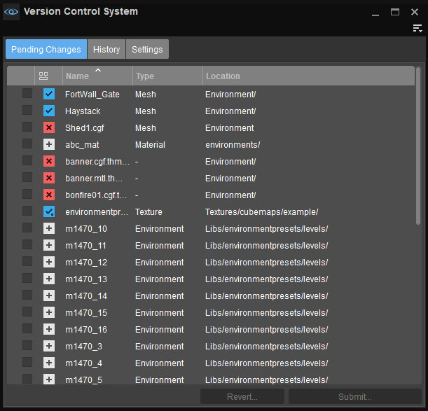
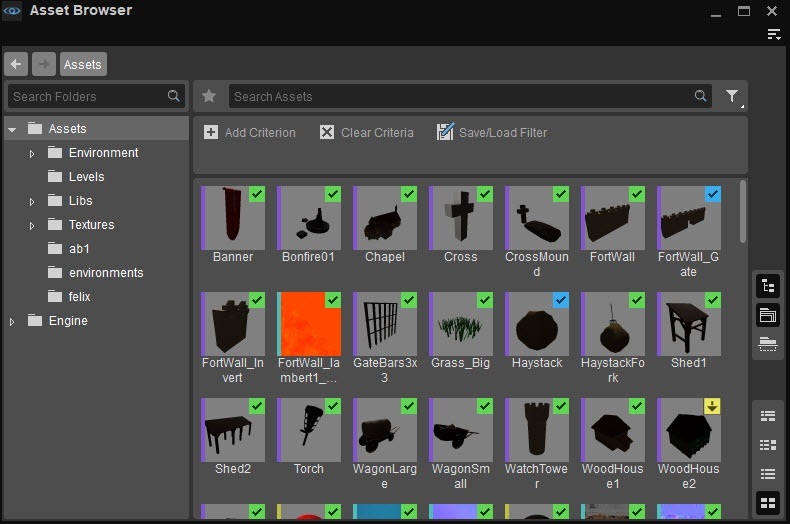
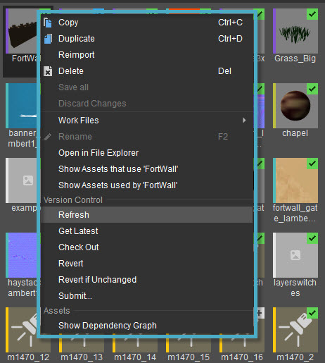
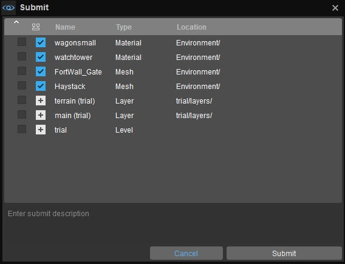
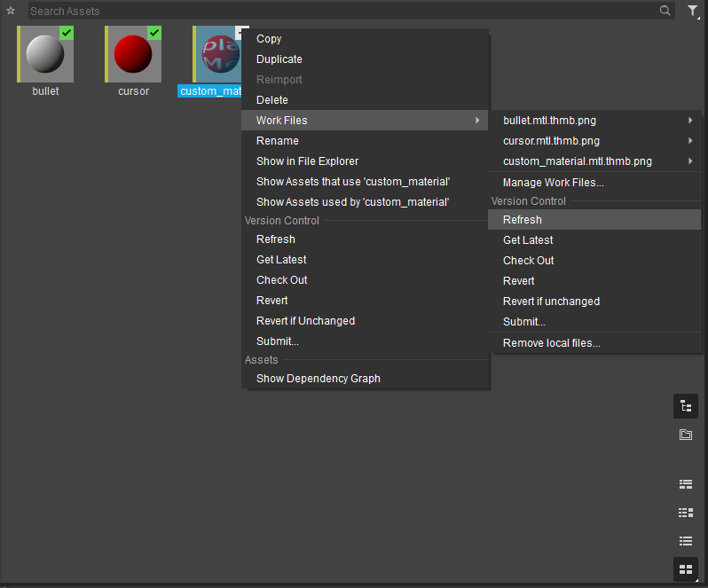

Overview
CRYENGINE's Sandbox has been integrated with a Version Control System (VCS) to make it easier for artists and developers working on the same assets to collaborate with each other.
This VCS works in conjunction with the Asset Browser and Level Explorer to allow modified assets, work files and levels from a project to be uploaded/downloaded from a repository, checked for previously made changes, and so on.
Currently Perforce is the only VCS supported, although other version control solutions are likely to be added in the future.

Version Control System Overview
Tool Window
Users can select their Version Control solution either via Tools -> Version Control System -> Settings from the Editor's main menu, via Edit -> Preferences -> Version Control -> General where names of the Perforce server, workspace, user and password need to be entered, or via the

Version Control System Tool Window
Tab Name | Description |
|---|---|
Pending Changes | Lists changes made to levels, assets and work files that have not been submitted to version control yet. To commit these changes to repository, tick the box in front of their names, enter a description for the submission and click Submit. |
History | Lists all previously made submissions by date, as well as the submission history of specific assets, work files and layers. |
Settings | This is where the Perforce server in use, workplace, user name and password must be specified. |
Functionality
Assets and Layers
With version control setup, the current status of every asset in the Asset Browser is indicated by a colored icon on their thumbnails as shown below.

Version control in the Asset Browser
Asset thumbnails are only visible when View -> Show Thumbnails/Split Horizontally/Split Vertically is activated from the
Similarly, the current status of every layer in the Level Explorer is indicated by a colored icon against their listings.

Level Explorer version control
Icon | Description |
|---|---|
New asset/layer. | |
Asset/layer has been checked out locally. | |
Asset/layer has been checked out and modified locally. | |
Asset/layer has been checked out remotely (by someone else). | |
Asset/layer is up to date. | |
Local version of asset/layer is out of date. | |
Asset/layer is marked for deletion. | |
Asset/layer isn't tracked by VCS yet. |
Version control functions can be performed on an asset or layer by right-clicking their listings in the Asset Browser or Level Explorer, respectively. Doing so on either tool, opens a context menu with the same set of options.

VCS Asset Browser context menu
| Option | Description |
|---|---|
Refresh | Manually updates the status of the selected version controlled assets/layers. Asset Browser Tip With View -> Show Details/Split Horizontally/Split Vertically active in the Asset Browser, the Version Control Status column also serves to reflect the status of all version controlled assets. This column can further be used with search filters described in the Smart & Advanced Search section of the Asset Browser document to make search queries specific to the status of these assets.
Level Explorer Tip The statuses of all version controlled layers are indicated under the Note that a layer is tracked by the Version Control System only once the corresponding level has been saved and the layer itself, written to disk as a .lyr file. |
Get Latest | Retrieves the most recently modified version of the selected asset/layer file from the repository. |
Check Out | Retrieves an asset or layer file from the repository to be worked upon locally; once Checked Out, a file will no longer be editable by other developers until local modifications have been Submitted or Reverted. |
Revert | Discards all changes made to an asset/layer file and restores it to its last local version. |
Revert if Unchanged | Performs the above Revert operation upon an asset/layer file, only if its contents haven't been modified. |
Submit... | Commits the selected locally modified assets, work files and layers to the repository. The Submit... option displays a separate window that lists within it all locally modified assets, work files and layers, and allows users to tick which changes they'd like to commit (including deletions made, if any). The submission process can only be completed after a description of changes performed have been entered in the text box provided within the Submit window.  |

The above context menu options of the Asset Browser and Level Explorer are displayed only when VCS has been setup correctly.
Work Files
The work files of a version controlled asset are also tracked by the installed VCS.
If VCS is set up correctly, the Work Files menu item that is visible on right-clicking an asset will contain options to perform the Refresh, Get Latest, Check Out, Revert, Revert if Unchanged and Submit... functions on the selected asset's work files as shown below.

Work files VCS
Additionally, the Work Files version control menu also includes the option to Remove local files which deletes copies of a version controlled asset's work files from the user's system, without deleting them from the repository. Since work files could be large in size, this option is especially useful in freeing up memory space.
CRYENGINE's VCS automatically tracks which work files need to be added or deleted from the repository.
Whenever a new association is created between a checked out asset and a work file, the work file is added to the repository provided users choose to Submit... the new association via the Work Files' version control menu.
In a similar fashion, when an association between an asset and work file is deleted, that work file will be permanently deleted from the repository only if no association exists between the work file and any other asset within the project. Please refer to the Associating Work Files to Assets section of the Asset Browser's Reference page for more information about adding work files to assets.